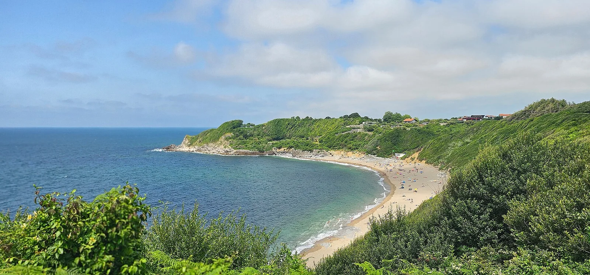

Lafitenia — St-Jean-de-Luz
Pays Basque, France · surf

Magnifique vague droite dans une baie abritée, l'une des plus belles du Pays Basque. Déroule longuement, idéale pour travailler ses courbes.
- Lieu
- Pays Basque, France
- Niveau
- Intermédiaire
- Activités
- surf
- Type d'eau
- Mer / océan
- Coordonnées
- 43.40, -1.66 (position approximative du secteur)
Dangers à connaître
- Fond de rochers, attention à marée basse.
- Spot populaire, souvent chargé.
Le conseil d'Ocean Buddy
Belle droite à rallonge ! Repère le pic principal et respecte les priorités.
Ouvrir dans Ocean Buddy Télécharger sur l'App Store
Source : Description historique Ocean Buddy · vérification externe en attente.